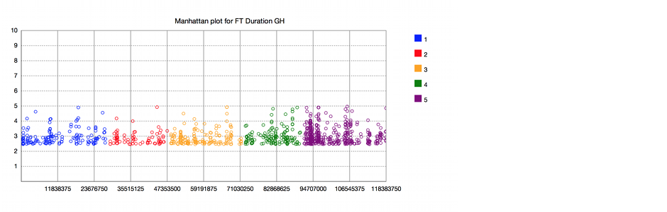
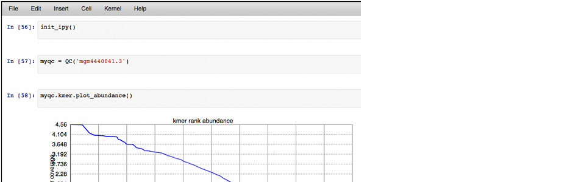
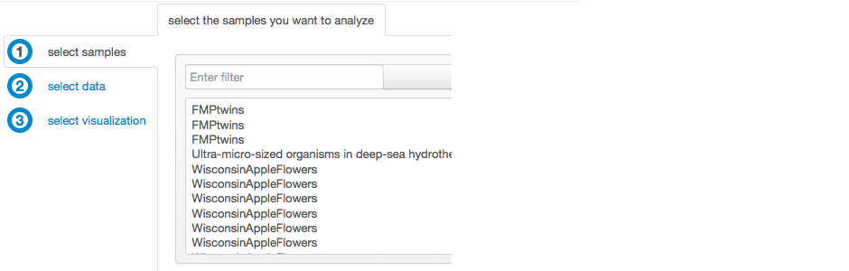
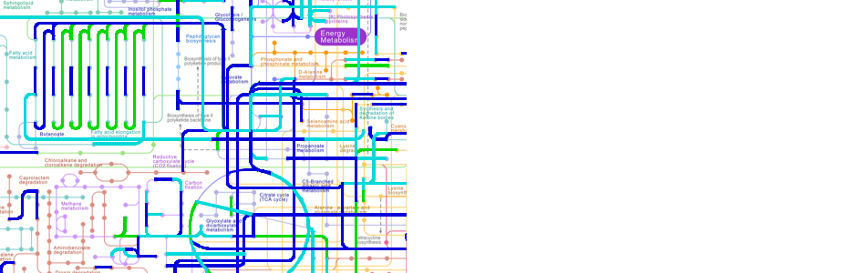
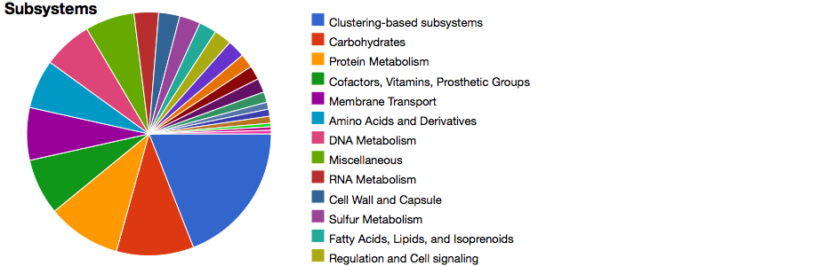

visualize your
KBase Notebook
visualize your
biological data

command line interface
IPython power
command line interface
with broad community
support

not a programmer?
Visual Analysis Builder
not a programmer?
we make it as easy
as 1 - 2 - 3

Experimental Design
Wizard
too much to sample?
we maximize your ! for the $

map arbitrary groupings of samples
KEGG Mapper
map arbitrary groupings of samples
onto a KEGG map

Metagenome Data
what's inside of your sample
Metagenome Data
Sheet
what's inside of your sample
at a glance
KBase Notebook
A framework for creating and sharing reproducible data analyses. Programmatically, with a visual editor or a combination - it's up to you.
Launch »Experimental Design Wizard
Evaluate which of your metagenomic samples you should investigate further to get the most information relevat to your biological question.
KEGG Mapper
A sample application for mapping metagenomic samples to KEGG using the Retina framework.
Metagenome Data Sheet
An example of a view presenting statistical information about a metagenome, using the Retina framework.